<!DOCTYPE html>
<html>
<head>
	<meta charset="utf-8">
	<title>팬데믹 속에서 지치지 않으려면 어떻게 해야할까</title>
	<script type="text/javascript" src="wow.min.js"></script>
	<style type="text/css">
		@font-face {
    font-family: 'GmarketSansLight';
    src: url('https://cdn.jsdelivr.net/gh/projectnoonnu/noonfonts_2001@1.1/GmarketSansLight.woff') format('woff');
    font-weight: normal;
    font-style: normal;
}
@font-face {
    font-family: 'GmarketSansBold';
    src: url('https://cdn.jsdelivr.net/gh/projectnoonnu/noonfonts_2001@1.1/GmarketSansBold.woff') format('woff');
    font-weight: normal;
    font-style: normal;
}
		header{margin-top:0px;margin-bottom: 0px;width: 100%; height: 900px; background: url('표지3.png'); background-size: 100%; background-repeat: no-repeat; }
		body{font-family: 'GmarketSansLight'; background: rgb(2,0,36);
			background: linear-gradient(0deg, rgba(3,162,209,1) 0%, rgba(104,142,208,1) 28%, rgba(130,173,151,1) 35%, rgba(73,124,206,1) 62%, rgba(162,173,188,1) 81%, rgba(73,124,206,1) 100%);}
		section{height: 600px; width: 1000px; margin: auto;background-repeat: no-repeat;}
		h1 {font-family: 'GmarketSansBold';margin-top:200px;font-size: 7rem;text-align: center;background: url(https://p4.wallpaperbetter.com/wallpaper/119/72/922/soft-pastel-purple-blue-wallpaper-preview.jpg);
			-webkit-background-clip:text;
			background-clip: text;
			-webkit-text-fill-color: transparent;
			animation: animate 0.5s linear infinite;}
			@keyframes animate{ from {background-position: 0% 50%;} to{background-position: 100% 50% 0%;}}
		h2 {font-size: 3.5em; text-align: center;color: white;margin-top: 100px;letter-spacing: 1px;line-height: 1.5;}
		h3 {text-align: center;color: white;font-size: 2em;margin-top: 100px}
		.p1{background: url('첫글배경.png');background-size: 100% auto;background-repeat:no-repeat; height: 1500px;width: 100%;font-size: 1.2rem;display: block;color: white;line-height: 1.7em;word-break: keep-all}
		.R {background: url('reading1.png');background-size: 100% auto;background-repeat:no-repeat; height: 450px;width: 100%;}
		.R1{background: url('reading2.png');background-size: 100% auto;background-repeat:no-repeat; height: 500px;width: 100%;}
		.r3{background: url('reading3.png');background-size: 100% auto;background-repeat:no-repeat; height: 500px;width: 100%;}

		.m{font-size:2rem;text-align: center;color: white;;}
		.bttani{animation:btt 1s; }
		@keyframes btt{
			from{opacity: 0; margin-top: 100px;}
			to{opacity: 1; margin-top: 0px;}
		}
		.Q {background: url('여자.png');background-size: 100% auto;background-repeat:no-repeat; height: 1200px;width: 100%;display: block;}

		.gradtext{font-family: 'GmarketSansBold'; background: url(https://blog.kakaocdn.net/dn/NSKRE/btqxQpBq5VM/wuxA1i9rOQnR4h6LXLMEjK/img.jpg);
			-webkit-background-clip:text;
			background-clip: text;
			-webkit-text-fill-color: transparent;
			animation: animate 0.5s linear infinite;}
			@keyframes animate{ from {background-position: 0% 50%;} to{background-position: 100% 50% 0%;}}
		.pp {animation: leftright 2s infinite reverse;}
		@keyframes leftright{ from{left: 100px;} to{right: 400px;}}
		.col{width: 300px;margin: 0px 5px;}
		.col2{width: 400px;margin-left: 800px;}
		.col3{width: 400px;margin-left: 900px; }
		
		.col4{width: 400px;margin-left: 1100px;}
		.sticker1 {width: 300px;top:4500px;z-index: 33;}
		.sticker2 {width: 100px;top:4900px;z-index: 34;}
		.sticker3 {width: 300px;top:9000px;z-index: 35;}
		.sticker4 {width: 100px;top:11350px;z-index: 36;}
		.sticker5 {width: 100px;top:11350px;z-index: 37;}

		.absolute{display: block;position: absolute;
			animation: rotate_image 10s linear infinite;transform-origin: 50% 50%;}
			@keyframes rotate_image{100% {transform: rotate(360deg);}}
		.desc{background: linear-gradient(to right,rgba(255,255,255,0)50%, #f3be00 50%); background-size: 200%;transition: .35s; color: #ffffff;}
		.desc:hover{background-position: -100% 0;}
		.bttani {
    animation: btt 1.7s;
    animation-fill-mode: forwards;}
    .circle{animation: circleshow 3s infinite}
		@keyframes circleshown { from {opacity:0;transform: translateX(-50px);} to{opacity:1;transform: translateX(0px);} }
	footer{font-size:0.7m;height:100px;padding-top:160px;margin-left: 700px;margin-bottom: 400px;}
	footer p{text-align:center;}
	
	</style>
</head>
<body>
	<header>
	</header>
	<h1> CORONA BLUE </h1>
	<h2><span class="gradtext">팬데믹</span> 속에서<br>지치지 않으려면 어떻게 해야할까?</h2>
	<section>
		<h3> ↘↘↘↘start↘↘↘↘</h3>
	</section>
	
	<section class="p1">
		<P style="width: 900px; text-align: left;padding-left: 300px; padding-top:200px">좋지 않은 소식에 지속적으로 노출되면 우리의 정신건강은 즉각적인 영향을 받는다. 불안 역시 심화된다. 그러나 끊임없는 위협감은 심리에 또 다른 영향을 남긴다. 병에 전염될지도 모른다는 두려움은 사람들을 ‘순응주의자’나 ‘인종주의자’가 되게 한다. ‘이민자’ 또는 ‘성 평등’ 같은 주제에 있어 사람들의 도덕적 판단은 더 가혹해지고 사회적 태도 역시 더 보수적으로 변한다. 개인의 정치적 성향마저도 흔들린다.</P>
		<P style="width: 900px; text-align: center;padding-left: 200px;padding-top:300px">요컨대 우리는 펜데믹이 이어지는 상황에서 전과 완전히 다른 형태로 지쳐가고 있다.</P>
		<P style="width: 650px; text-align: left;padding-left: 800px;padding-top:300px; margin-bottom: 300px">항상 새로운 뉴스에서는 정보가 끊임없이 쏟아진다. 팬데믹에 관한 것이든, 집에서 어떻게 일하는 것이 좋은 지에 대한 방안이든, 팬데믹은 우리에게 어려운 결정을 빠르게 내릴 것을 강요하고 있다. 이러한 결정 피로는 우리 자신과 가족, 공동체를 위해 영리하고 안전한 결정을 해야 한다는 압박감과 결합된다. 그리고 이것은 팬데믹 특유의 번아웃을 초래할 수 있다.</P>
	</section>
	<section class="R">
	</section>
	<section class="m"><p> 긴장을 풀어야 한다는 <span style="font-weight: 700;"> 스트레스</span></p>
	</section>
	<section>
		<p style="width: 700px; text-align: left;color: white;margin-left: 400px;font-size: 1.3em;line-height: 1.7em;word-break: keep-all;">사람들에게 열정이 담긴 시도를 시작하거나 끝내라는 소셜미디어의 메시지들은 이미 자신의 시간을 제대로 보내지 못해서 미쳐버릴 것 같은 사람들에게 또 하나의 스트레스 요인이 될 수 있다.<span class="desc"> 그것은 특히 모든 시간을 생산적으로 쓰지 못한다는 우려에 갇힌 사람들에게 더 큰 스트레스를 줄 수 있다.</span></p>
		<p style="width: 800px; text-align: left;color: white; margin-left: 200px;font-size: 1.3em;line-height: 1.7em;word-break: keep-all;margin-top: 100px;">새로운 것을 억지로 시도하는 것은 번아웃을 가중시킬 수 있다. 스트레스 푸는 방법은 정답이 있는 것이 아니다.<span class="desc">두려워할 필요없이 이미 가지고 있는 취미를 활용하면 된다.</span> 이미 알고 있는 것들이 사진을 행복하게 해주고 스트레스를 덜어준다. 팬데믹으로 인한 번아웃을 막는 것의 포인트는 이를 위한 활동이 피곤함을 주지 말아야 한다는 것이다.</p>
		<div class="col">
			
			
			
		</div>
	</section>
	<section>
		<h4 class="wow bttani">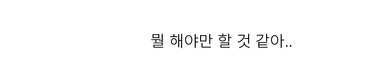
		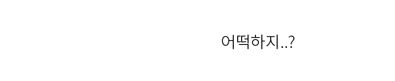</h4>
	</section>
	<section>
		<h4 class="wow bttani">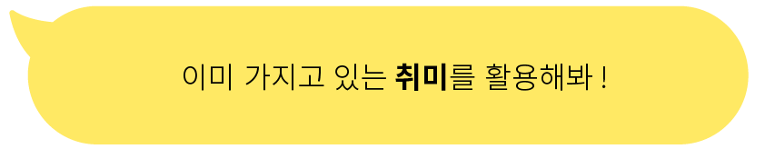</h4>
	</section>
	<section class="Q">
	</section>
	<section class="R1">
	</section>
	<section class="m"><p> 사회적 거리두기 기간중 <span style="font-weight: 700"> 폭식</span>을 피하는 방법</p>
	</section>
	<section>
		<p style="width: 900px; text-align: left;color: white; margin-left: -50px;font-size: 1.3em;line-height: 1.7em;word-break: keep-all;margin-top: -300px;">신종 코로나바이러스 감염증(코로나19)으로 인한 사회적 거리두기 속에서 '확찐자'가 됐다는 밈(Meme)을 본 적 있을 것이다. 이런 농담은 섭식장애를 겪고 있는 사람들을 자극할 수 있다. 그러면서도 집 안에 머물러야 하는 사람들이 현상황에 대해 가진 두려움을 보여준다.</p>
		<p style="width: 700px; text-align: left;color: white; margin-left: 100px;font-size: 1.3em;line-height: 1.7em;word-break: keep-all;margin-top: 100px;">인간의 몸은 스트레스를 받았을 때 고칼로리와 당분이 많은 음식을 갈망하는 경향이 있다. 이러한 음식이 단기간에 에너지를 공급하기 때문이다. 스트레스는 코르티솔 수치를 높이는데, 이로 인해 식욕이 증가할 수 있다. 그리고 설탕이 들어간 음식은 동기와 보상에 관련된 신경전달물질, 도파민을 생성한다. </p>
		<div class="col2">
			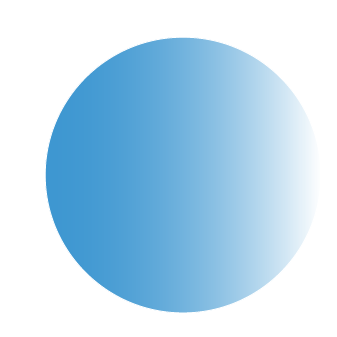
		</div>
	</section>
	<section>
		<h3>1.가족과 친구들과 <span class="gradtext">함께</span></h3>
		<p style="width: 1000px; text-align: left;color: white; margin-left: 10px;font-size: 1.3em;line-height: 1.7em;word-break: keep-all;margin-top: 100px;"><span style="font-weight:600">사회적인 관계</span>를 찾는 것이 중요하다. 가족과 함께 하루 세끼를 먹고 현재 먹는 사진들을 공유하여 함께 살아가는 이들과 연결되면 연쇄적으로 일어나는 우을증의 증상을 낮추는 것에 효과적이다.</p>
		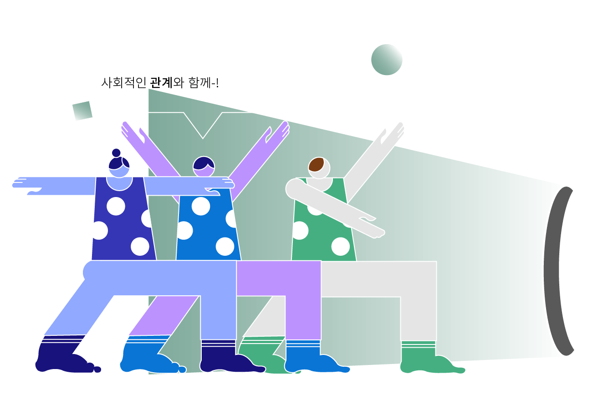
	</section>
	<section></section>
	<section>
		<h3>2. 자신의 <span class="gradtext">‘방아쇠’</span>찾기</h3>
		<p style="width: 900px; text-align: left;color: white; margin-left: 300px;font-size: 1.3em;line-height: 1.7em;word-break: keep-all;margin-top: 100px;">무엇이 음식에 대한 갈망을 가져왔는지 이해하는 것이다. 이 갈망은 음식 그 자체가 아니라, 휴식이나 변화가 필요해서 생겨났을 수도 있다. 만약 배도 안 고프고 음식의 제약을 받지도 않았는 데 음식을 찾고 있는 상황이 된다면, 이것은 중요한 정보가 될 수 있다. 이와 관련해서 자신의 방아쇠를 파악하는 것이 중요하다. 혼란의 시기에 음식은 위안과 연결이 원천이 될 수 있지만 건강의 측면에서는 다른 해결 방법을 찾는 것이 좋다.</p>
		<div class="pp">
		
	</div>
		<div class="col3">
			
		</div>
		<div class="col4">
			
		</div>
	</section>
	
	</section>
	<section>
		
	</section>
	<section class="wow bttani">
		<h4 style="margin-top: 500px;font-size: 1.3em; color: white;" >1. 내 몸과 마음의 상태 알아차리기</h4>
		<p style="width: 700px; text-align: left;color: white; margin-left: 300px;font-size: 1em;line-height: 1.7em;word-break: keep-all;margin-top: 100px;margin-left: -10px">자신의 몸과 마음의 상태를 알아차리는 것, 특히 스트레스가 내 몸과 마음에 어떤 변화를 일으키는 있는지 알아차리는 것이 첫번째이다. 혈압, 혈당, 맥박, 수면과 같은 기본적 생리 상태부터 출발하여 자신의 걱정, 근심, 분노, 불안 괴로운 감정 등이 얼마나 자신을 차지하고 있는지 알아야한다. 나의 상태를 조절하기 위해서 나를 살펴보자</p>
	</section>
	<section class="wow bttani">
		<h4 style="margin-top: 50px;font-size: 1.3em; color: white;margin-left: 400px;" >2. 몸과 마음의 고요한 안정과 회복</h4>
		<p style="width: 700px; text-align: left;color: white; font-size: 1em;line-height: 1.7em;word-break: keep-all;margin-top: 100px;margin-left: 400px">뉴스에서 쏟아져 나오는 각종 기사들로 정보에 몸이 예민하고 긴장된 상태일 것이다. 그러므로 내 몸의 상태를 파악한 뒤 남은 에너지를 효율적으로 사용해야한다. 가장 쉬운 방법은 몸과 마음을 시끄럽지 않게, 고요하게 안정시키는 것이다. 최소한의 에너지만 사용하면서 집 안에서 휴식을 취한다.</p>
	</section>
	<section class="wow bttani">
		<h4 style="margin-top: 10px;font-size: 1.3em; color: white;" >3. 나만의 스트레스 해소 활동, 특히 몸의 사용</h4>
		<p style="width: 700px; text-align: left;color: white; margin-left: 300px;font-size: 1em;line-height: 1.7em;word-break: keep-all;margin-top: 100px;margin-left: -10px">호흡으로 시작해서 호흡으로 끝낼 수 있는 정적이면서 쉬운 운동을 한다. 가벼운 땀과 호흡이 가빠질 정도의 30분 이상 운동은 혈중 콜티졸이라는 스트레스 호르몬을 줄인다.</p>
	</section>
	<section class="wow bttani">
		<h4 style="margin-top: -50px;font-size: 1.3em; color: white;margin-left: 400px;" >4. 긍정적 기운 주입</h4>
		<p style="width: 700px; text-align: left;color: white; font-size: 1em;line-height: 1.7em;word-break: keep-all;margin-top: 100px;margin-left: 400px">위의 방법을 따라왔더라면 전반적인 스트레스 상태가 완화되어 있을 것이다. 이를 유지하기 위해서 끝으로 자신에게 긍정적인 말을 해줘야 한다. 과대하고 비현실적인 긍정은 오히려 부담을 주지만, 긍정적인 기운과 말은 스트레스 침투 보호막이 되어줄 것이다.</p>
	</section>


	<script type="text/javascript">


	new WOW().init();
    console.log("ok");
	</script>
	<footer><p>@ design by Nam Seung Joo</p></footer>
</body>
</html>